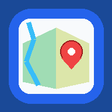

파주 유적지도 앱
문산읍·파주읍·법원읍 유적 지도, CAD 수치지형도 기본지도, DXF 위치도, 사진, 신규 구역, 공유 사진 기능 포함
앱 설치가 가능한 상태입니다. 아래 앱 설치 버튼을 눌러 설치하세요.
Android Chrome/Samsung Internet
설치 버튼이 작동하지 않으면 브라우저 메뉴에서 앱 설치 또는 홈 화면에 추가를 선택하세요.
iPhone
Safari에서 이 주소를 열고 공유 → 홈 화면에 추가를 선택하세요.
설치 버튼이 작동하지 않으면 브라우저 메뉴에서 앱 설치 또는 홈 화면에 추가를 선택하세요.
iPhone
Safari에서 이 주소를 열고 공유 → 홈 화면에 추가를 선택하세요.
현재 위치 기능은 HTTPS 주소에서 위치 권한을 허용해야 작동합니다. 공유 사진 삭제·전체 다운로드 기능은 기존 Apps Script v8.16 배포를 그대로 사용합니다. v8.20은 기존 수치지도(등고선)를 제거하고 CAD 수치지형도를 위성지도·일반지도(OSM)와 같은 기본지도로 선택하도록 바꾼 버전입니다. PNG 지도 타일을 사용하므로 ZIP 전체를 압축 해제하면 desktop.html을 직접 열어도 표시됩니다.